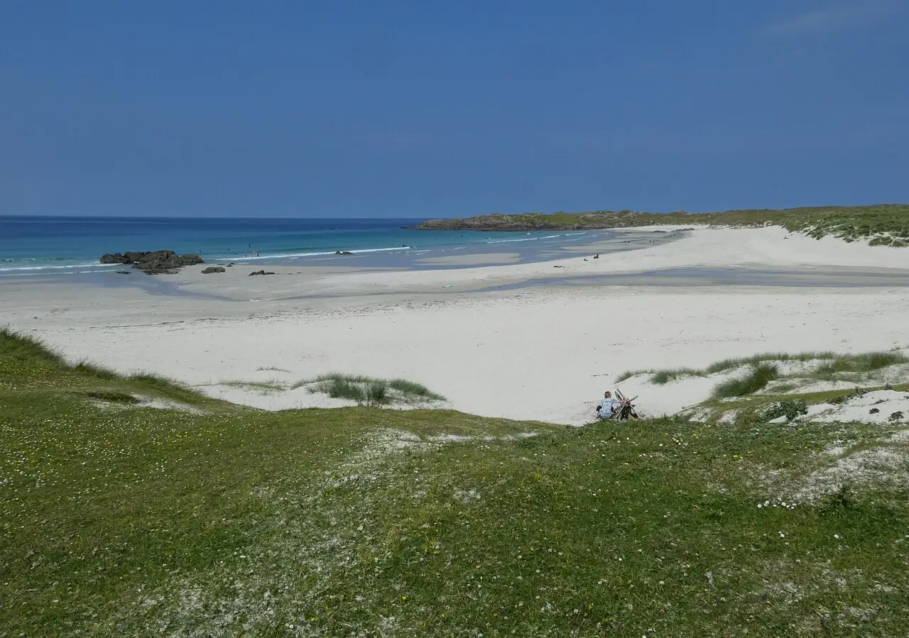

Tiree — Balevullin
Hébrides intérieures, Écosse, Royaume-Uni · windsurf, kitesurf, surf

Île basse et très ventée des Hébrides intérieures, surnommée « Hawaï du Nord » par les windsurfeurs. La plage de Balevullin, sur la côte ouest, reçoit directement la houle de l’Atlantique.
- Lieu
- Hébrides intérieures, Écosse, Royaume-Uni
- Niveau
- Intermédiaire
- Activités
- windsurf, kitesurf, surf
- Type d'eau
- Mer / océan
- Coordonnées
- 56.52, -6.96 (position approximative du secteur)
Dangers à connaître
- Vent fort et rafales fréquentes, surtout en automne et en hiver.
- Eau froide et secours éloignés : ne sors jamais seul.
Le conseil d'Ocean Buddy
L’île offre des plages orientées dans toutes les directions : choisis celle qui est abritée ou exposée selon le vent du jour.
Ouvrir dans Ocean Buddy Télécharger sur l'App Store
Source : Fiche Ocean Buddy · septembre 2026 · à vérifier localement.